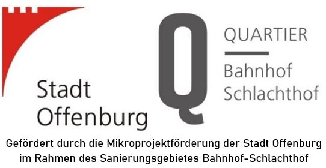

Wir betreiben in unseren Räumen eigene Knoten der lokalen Freifunk Community Freifunk Karlsruhe und treiben den Netzausbau in der Ortenau voran. Wenn du auch bei Freifunk mitmachen möchtest bist du bei uns genau richtig. Wir haben auch immer wieder fertig vorbereitete Freifunk-Hardware vorrätig, die zum Selbstkostenpreis erworben werden kann. Details gibt es auf den entsprechenden Wiki-Seiten.
Wir betreiben — gefördert durch die Stadt Offenburg — ein The Things Network LoRaWAN-Gateway am Bahnhof. In Zusammenhang mit diesem energiearmen Weitbereichsnetzwerk für das Internet der Dinge werden in unserer wachsenden Mitmachwerkstatt in den kommenden Monaten verschiedene Workshops angeboten, zu denen wir euch herzlich einladen!
Mit einem für alle Bürgerinnen und Bürger offenen Funknetzwerk (siehe The Things Network & LoRaWAN) für das Internet der Dinge möchten wir zum selbstständigen Experimentieren sowie zum Erleben neuer Technologien anregen. In verschiedenen niederschwelligen Workshops werden wir die einfach zusammensteckbare Hardware programmieren, um damit in Echtzeit Umweltdaten wie beispielsweise die aktuelle Feinstaubbelastung im Quartier Bahnhof-Schlachthof erheben zu können. Die erhobenen Daten werden der Allgemeinheit offen auf OpenSenseMap zur Verfügung gestellt.
Radfahren soll für alle sicher und ohne Angst möglich sein. Um zu erkennen, wo sich besondere Gefahrenzonen befinden, können mit einem OpenBikeSensor Messungen des Überholabstands durchgeführt werden. Auf einer für alle Bürgerinnen und Bürger offenen Karte werden die so erfassten Daten dann kumuliert angezeigt. Diese OpenBikeSensoren sollen in Workshops gemeinsam mit den TeilnehmerInnen aus einzelnen Bauteilen zusammen gebaut werden.

Rechtzeitig zu Ostern bauen wir uns neue Eierbemal-Roboter.
Spaß mit Displays, bei denen sich was bewegt. 8 Ziffern einer Flughafen-Fallblattanzeigen, Flip-Dot-Anzeigen aus dem Linienbus (Heck und 2m Front), Zapfsäulen-Display, und vieles mehr.
Funktionen: Öffnen einer Türe mittels Authentifizierung über ein Smartphone
Aus der Idee: "Was können wir besonders gut, womit wir etwas gegen Corona tun?" haben wir angefangen, Gesichtsschilder und Maskenhalter ("Mundschutzentlastungsbänder" - MSEB) mit dem 3D-Drucker anzufertigen und an Stellen zu verteilen, die diese nicht oder nicht in ausreichender Anzahl bekommen konnten. Zu Spitzenzeiten waren über 30 3D-Drucker gleichzeitig am Werk, fast 30 Freiwillige rund um den Verein haben gedruckt. In Summe waren es dann mehr als 1.000 Bänder und mehr als 2.000 Gesichtsschilder, die wir gefertigt und zugestellt haben.
Brautomat - der (Bier)brau(au)tomat
Funktionen: Ansteuerung des Rührwerks mit konstanter Drehzahl oder Sinusmodulation für maximale Durchmischung Temperaturregelung entlang des konfigurierbaren Profils.
Stromverbrauch im Überblick
volkszaehler.org ist ein freies Smart Meter im Selbstbau. Der Nutzer behält dabei die vollständige Kontrolle über Daten seiner Smart Meter.
Openslot macht Dich zum "root" Deiner Rennbahn. Alles ist möglich.
Das Projekt besteht aus einer neuen Firmware für die CU/Blackbox und einer Clientsoftware für den PC. Die Clientsoftware ist das Live Monitoring mit welcher Rundenzeiten, Bestzeiten angezeigt werden, aber noch vielen mehr.